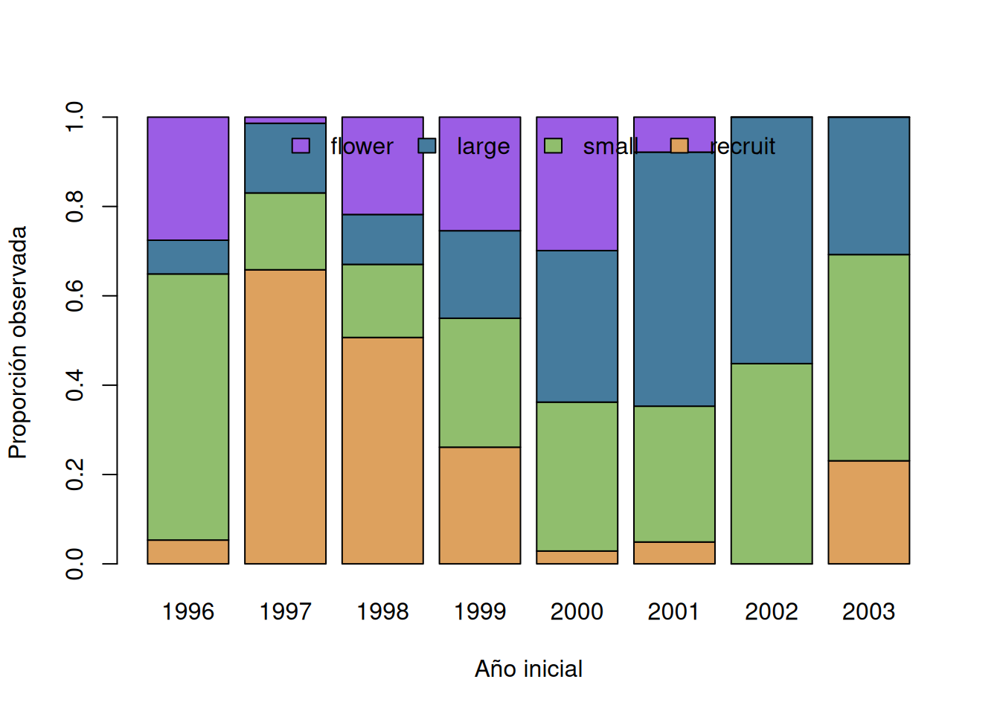

if (!requireNamespace("popbio", quietly = TRUE)) {
stop("Este capítulo requiere el paquete 'popbio'.")
}
data("aq.trans", package = "popbio")
d <- aq.trans
stages <- c("recruit", "small", "large", "flower")
stopifnot(all(c("plot", "year", "plant", "stage", "fate", "fruits") %in% names(d)))
stopifnot(!anyNA(d[c("plot", "year", "plant", "stage", "fate")]))
stopifnot(all(d$fruits >= 0, na.rm = TRUE))
key <- interaction(d$plot, d$year, d$plant, drop = TRUE)
stopifnot(!anyDuplicated(key))
audit <- list(
dimensions = dim(d), plots = sort(unique(d$plot)), years = range(d$year),
initial_stage = table(d$stage, useNA = "ifany"),
fate = table(d$fate, useNA = "ifany"),
missing = colSums(is.na(d))
)
audit
#> $dimensions
#> [1] 1637 9
#>
#> $plots
#> [1] 903 906 909 913 914 916 921 923 929 930
#>
#> $years
#> [1] 1996 2003
#>
#> $initial_stage
#>
#> seed recruit small large flower
#> 0 574 461 320 282
#>
#> $fate
#>
#> seed recruit small large flower dead
#> 0 0 306 297 206 828
#>
#> $missing
#> plot year plant stage leaf rose fruits fate rose2
#> 0 0 0 0 15 813 0 0 107410 Demografía y dinámica poblacional
Supervivencia, transiciones y cambio por estadios
La demografía conecta destinos individuales con cambio poblacional. Nacimientos, supervivencia, crecimiento, reproducción y movimiento deben compartir población, intervalo y convención de censo. Una tasa sin denominador y periodo explícitos no es comparable, y un cambio local mezcla procesos si la población es abierta (Henderson y Southwood 2016; Sutherland 2006).
10.1 Contabilidad y tasas vitales
Para una población delimitada,
\[ N_{t+1}=N_t+B_t-D_t+I_t-E_t. \]
Si inmigración y emigración no se observan, desaparición no equivale necesariamente a muerte y reclutamiento no equivale necesariamente a nacimiento local. Marcar y revisitar individuos permite estimar destinos condicionados al estado inicial; parcelas permanentes describen además entradas y estructura (Gregg 2008).
Para \(n_j\) individuos en estadio inicial \(j\), de los cuales \(n_{ij}\) aparecen en el estadio \(i\) al siguiente censo,
\[ \widehat p_{ij}=\frac{n_{ij}}{n_j}, \qquad \widehat S_j=\sum_{i\in\text{vivos}}\widehat p_{ij}. \]
\(\widehat S_j\) es supervivencia aparente cuando no se separan muerte, emigración y no detección. Permanencia, crecimiento y retroceso son componentes distintos de la transición. Sus conteos comparten denominador y no son estimaciones independientes.
10.2 Fertilidad y reclutamiento
Frutos, semillas, nacimientos y nuevos individuos censables representan etapas distintas. Una media de frutos por planta florecida mide producción reproductiva, no reclutamiento. Para conectar reproducción con nuevos censables se necesita la cadena de establecimiento o un cociente empírico con intervalo y área compatibles (Henderson y Southwood 2016).
Con censos anuales por parcela puede resumirse
\[ F=\frac{\text{reclutas en }t+1}{\text{plantas florecidas en }t}. \]
\(F\) es reclutamiento por planta florecida, no maternidad identificada: reclutas pueden proceder del banco de semillas y las madres no están enlazadas. La interpretación exige declarar esta limitación.
10.3 Estructura por estadios
Edad cronológica no siempre predice destino. En plantas perennes, tamaño y estado reproductivo suelen definir estadios útiles. Sea \(\boldsymbol n_t\) el vector de números por estadio. Una matriz anual descriptiva puede escribirse
\[ \boldsymbol n_{t+1}=\mathbf A\boldsymbol n_t, \]
donde la columna \(j\) representa el estadio de origen y la fila \(i\) el destino. Las entradas vegetativas son probabilidades; una entrada reproductiva puede exceder uno si cuenta nuevos individuos por adulto. La matriz supone tasas constantes, clasificación correcta, intervalo común y cierre suficiente para la pregunta (Henderson y Southwood 2016).
Una proyección es condicional, no un pronóstico garantizado. Antes de proyectar se deben comparar totales predichos con censos posteriores, revisar variación entre años y parcelas y propagar incertidumbre de las unidades independientes.
10.4 Incertidumbre y diagnóstico
Para una proporción, intervalos binomiales son útiles si los destinos individuales son comparables. Cuando individuos comparten parcela y ambiente, remuestrear filas subestima variación; parcelas o periodos son unidades más apropiadas. Con pocas parcelas, los intervalos describen estabilidad limitada (Manly y Navarro Alberto 2015).
Diagnósticos demográficos incluyen denominadores pequeños, estados imposibles, columnas vegetativas mayores que uno, tasas variables por año, plantas duplicadas y discrepancias entre estructura observada y predicha. Sensibilidad razonable examina parcelas, periodos y definiciones de estadio, sin convertir una proyección en una recomendación automática.
10.5 Aplicación completa: demografía de Aquilegia chrysantha
10.5.1 Procedencia, diseño, unidad y estimandos
popbio::aq.trans contiene transiciones anuales de Aquilegia chrysantha en diez parcelas de Fillmore Canyon, Organ Mountains, Nuevo México, entre 1996 y 2003. La documentación identifica propietarios, planta, parcela, año, estadio inicial, frutos y destino anual; el paquete y los datos se describen en Stubben y Milligan (2007).
La unidad longitudinal es la planta marcada y la unidad ambiental replicada es la parcela. Los estimandos son: supervivencia aparente anual por estadio; distribución de destinos vivos; frutos medios por planta florecida; reclutas por planta florecida del año anterior; y una matriz anual agrupada para estas parcelas y años. No hay selección probabilística de cañones ni maternidad de reclutas.
10.5.2 Importación y auditoría
La ausencia de plantas en el estadio seed y de destinos seed o recruit evita estimar directamente el banco de semillas. Los NA morfológicos no se sustituyen por cero; para transiciones bastan estadio y destino.
10.5.3 Exploración de estructura y reproducción
stage_year <- xtabs(~ stage + year, d)
stage_year
#> year
#> stage 1996 1997 1998 1999 2000 2001 2002 2003
#> seed 0 0 0 0 0 0 0 0
#> recruit 12 287 186 76 5 5 0 3
#> small 134 75 60 84 58 31 13 6
#> large 17 68 41 57 59 58 16 4
#> flower 62 6 80 74 52 8 0 0
#| fig-cap: "Composición anual de los estadios iniciales observados."
barplot(prop.table(stage_year[stages, , drop = FALSE], 2),
col = c("#dda15e", "#90be6d", "#457b9d", "#9b5de5"),
xlab = "Año inicial", ylab = "Proporción observada",
legend.text = stages, args.legend = list(x = "top", ncol = 4, bty = "n"))
aggregate(fruits ~ stage, d, function(x) {
c(n = sum(!is.na(x)), mean = mean(x, na.rm = TRUE),
median = median(x, na.rm = TRUE), total = sum(x, na.rm = TRUE))
})
#> stage fruits.n fruits.mean fruits.median fruits.total
#> 1 recruit 574.000000 0.000000 0.000000 0.000000
#> 2 small 461.000000 0.000000 0.000000 0.000000
#> 3 large 320.000000 0.000000 0.000000 0.000000
#> 4 flower 282.000000 2.741135 2.000000 773.000000La gráfica separa estructura de tamaño poblacional. Los frutos están concentrados en plantas florecidas; muchos ceros son resultados reproductivos válidos.
10.5.4 Transición y supervivencia aparente
transition_counts <- with(d, table(stage, fate))[stages,
c(stages, "dead"), drop = FALSE]
transition_prob <- prop.table(transition_counts, 1)
survival <- data.frame(
stage = stages,
n = rowSums(transition_counts),
apparent_survival = 1 - transition_prob[, "dead"]
)
survival_ci <- t(vapply(seq_along(stages), function(j) {
binom.test(sum(transition_counts[j, stages]),
sum(transition_counts[j, ]))$conf.int
}, numeric(2)))
survival$lower <- survival_ci[, 1]
survival$upper <- survival_ci[, 2]
survival
#> stage n apparent_survival lower upper
#> recruit recruit 574 0.1306620 0.1041786 0.1610135
#> small small 461 0.5878525 0.5413910 0.6331796
#> large large 320 0.6875000 0.6335857 0.7379026
#> flower flower 282 0.8617021 0.8158249 0.8997738
round(transition_prob, 3)
#> fate
#> stage recruit small large flower dead
#> recruit 0.000 0.129 0.000 0.002 0.869
#> small 0.000 0.364 0.137 0.087 0.412
#> large 0.000 0.094 0.331 0.262 0.312
#> flower 0.000 0.121 0.454 0.287 0.138Los intervalos binomiales tratan plantas como ensayos comparables y por eso son optimistas si hay agrupación por parcela o año. Se complementarán con remuestreo de parcelas.
10.5.5 Fertilidad observada y reclutamiento
flower_rows <- d$stage == "flower"
fruit_summary <- c(
flowering_plants = sum(flower_rows),
mean_fruits = mean(d$fruits[flower_rows], na.rm = TRUE),
proportion_with_fruit = mean(d$fruits[flower_rows] > 0, na.rm = TRUE)
)
counts <- as.data.frame(xtabs(~ plot + year + stage, d))
names(counts)[4] <- "count"
wide <- reshape(counts, idvar = c("plot", "year"), timevar = "stage",
direction = "wide")
names(wide) <- sub("count\\.", "", names(wide))
for (s in stages) if (!s %in% names(wide)) wide[[s]] <- 0
next_recruits <- wide[c("plot", "year", "recruit")]
next_recruits$year <- as.numeric(as.character(next_recruits$year)) - 1
wide$year <- as.numeric(as.character(wide$year))
names(next_recruits)[3] <- "recruits_next"
paired <- merge(wide, next_recruits, by = c("plot", "year"))
paired <- paired[paired$flower > 0, ]
F_pooled <- sum(paired$recruits_next) / sum(paired$flower)
fruit_summary
#> flowering_plants mean_fruits proportion_with_fruit
#> 282.000000 2.741135 0.787234
data.frame(plot_years = nrow(paired), flowering = sum(paired$flower),
recruits_next = sum(paired$recruits_next),
recruits_per_flowering = F_pooled)
#> plot_years flowering recruits_next recruits_per_flowering
#> 1 46 282 481 1.705674El cociente agrupado alinea parcela y años consecutivos. No mide semillas por fruto ni asigna descendencia; resume establecimiento observado por planta florecida previa bajo posible contribución del banco de semillas.
10.5.6 Matriz transparente y proyección de un paso
La matriz usa recruit, small, large y flower. Las tres filas vegetativas proceden de destinos observados; la primera fila contiene el cociente de reclutamiento únicamente en la columna de plantas florecidas.
A <- matrix(0, nrow = 4, ncol = 4,
dimnames = list(destination = stages, origin = stages))
A[c("small", "large", "flower"), ] <-
t(transition_prob[, c("small", "large", "flower"), drop = FALSE])
A["recruit", "flower"] <- F_pooled
stopifnot(all(is.finite(A)), all(A >= 0))
vegetative_column_sums <- colSums(A[c("small", "large", "flower"), , drop = FALSE])
stopifnot(all(vegetative_column_sums <= 1 + sqrt(.Machine$double.eps)))
round(A, 3)
#> origin
#> destination recruit small large flower
#> recruit 0.000 0.000 0.000 1.706
#> small 0.129 0.364 0.094 0.121
#> large 0.000 0.137 0.331 0.454
#> flower 0.002 0.087 0.262 0.287
last_year <- max(d$year)
n_last <- table(factor(d$stage[d$year == last_year], levels = stages))
prediction <- drop(A %*% as.numeric(n_last))
data.frame(stage = stages, observed_initial = as.numeric(n_last),
projected_next = prediction)
#> stage observed_initial projected_next
#> recruit recruit 3 0.000000
#> small small 6 2.948311
#> large large 4 2.144957
#> flower flower 0 1.575834La proyección posterior a 2003 es un escenario de tasas agrupadas, no una observación ni un pronóstico validado. Combina supervivencia aparente y reclutamiento asociado, con tasas constantes entre parcelas y años.
10.5.7 Incertidumbre por parcelas
matrix_from_data <- function(z) {
tc <- with(z, table(factor(stage, levels = stages),
factor(fate, levels = c(stages, "dead"))))
tp <- prop.table(tc, 1)
cy <- as.data.frame(xtabs(~ plot + year + stage, z))
names(cy)[4] <- "count"
cw <- reshape(cy, idvar = c("plot", "year"), timevar = "stage", direction = "wide")
names(cw) <- sub("count\\.", "", names(cw))
for (s in stages) if (!s %in% names(cw)) cw[[s]] <- 0
nr <- cw[c("plot", "year", "recruit")]
nr$year <- as.numeric(as.character(nr$year)) - 1
cw$year <- as.numeric(as.character(cw$year))
names(nr)[3] <- "recruits_next"
pr <- merge(cw, nr, by = c("plot", "year"))
pr <- pr[pr$flower > 0, ]
M <- matrix(0, 4, 4, dimnames = list(stages, stages))
M[2:4, ] <- t(tp[, c("small", "large", "flower"), drop = FALSE])
M[1, 4] <- sum(pr$recruits_next) / sum(pr$flower)
M
}
set.seed(1010)
plots <- unique(d$plot)
B <- 999
boot <- replicate(B, {
selected <- sample(plots, length(plots), replace = TRUE)
zb <- do.call(rbind, lapply(seq_along(selected), function(i) {
x <- d[d$plot == selected[i], ]
x$plot <- i
x
}))
M <- matrix_from_data(zb)
c(survival = colSums(M[2:4, , drop = FALSE]),
recruitment = M[1, 4])
})
t(apply(boot, 1, quantile, c(.025, .5, .975), na.rm = TRUE))
#> 2.5% 50% 97.5%
#> survival.recruit 0.08027321 0.1326923 0.1720018
#> survival.small 0.51495221 0.5899705 0.6394509
#> survival.large 0.65011718 0.6864686 0.7381369
#> survival.flower 0.81441930 0.8609023 0.8892054
#> recruitment 0.59703038 1.6838906 2.9714850El remuestreo conserva juntas plantas y años de cada parcela. Diez parcelas siguen siendo una base pequeña para inferencia regional.
10.5.8 Diagnóstico retrospectivo
Se estima una matriz con todos los años excepto el último intervalo disponible y se compara la estructura predicha con los destinos observados de ese intervalo.
train <- d[d$year < max(d$year), ]
A_train <- matrix_from_data(train)
validation <- d[d$year == max(d$year), ]
n_origin <- table(factor(validation$stage, levels = stages))
observed_fates <- table(factor(validation$fate,
levels = c(stages, "dead")))[stages]
predicted_fates <- drop(A_train %*% as.numeric(n_origin))
diagnostic <- data.frame(
stage = stages, observed = as.numeric(observed_fates), predicted = predicted_fates,
pearson = (as.numeric(observed_fates) - predicted_fates) /
sqrt(pmax(predicted_fates, 1))
)
diagnostic
#> stage observed predicted pearson
#> recruit recruit 0 0.000000 0.0000000
#> small small 4 2.931176 0.6242885
#> large large 5 2.108722 1.9910413
#> flower flower 1 1.582831 -0.4632605La comparación es imperfecta porque el reclutamiento de la matriz se alinea por parcela-año, mientras los destinos validan plantas ya censadas. Residuos grandes señalan variación temporal, clasificación o reclutamiento no representado; no identifican por sí solos cuál proceso falló.
10.5.9 Sensibilidad entre parcelas y periodos
leave_plot <- sapply(plots, function(p) {
M <- matrix_from_data(d[d$plot != p, ])
c(survival = colSums(M[2:4, , drop = FALSE]), recruitment = M[1, 4])
})
period_split <- lapply(list(early = d[d$year <= 1999, ],
late = d[d$year >= 2000, ]), matrix_from_data)
leave_summary <- data.frame(
parameter = rownames(leave_plot),
minimum = apply(leave_plot, 1, min, na.rm = TRUE),
maximum = apply(leave_plot, 1, max, na.rm = TRUE),
row.names = NULL
)
period_summary <- do.call(rbind, lapply(names(period_split), function(period) {
M <- period_split[[period]]
data.frame(period,
parameter = c(paste0("survival_", stages), "recruitment"),
estimate = c(colSums(M[2:4, , drop = FALSE]), M[1, 4]))
}))
leave_summary
#> parameter minimum maximum
#> 1 survival.recruit 0.1208226 0.1528662
#> 2 survival.small 0.5621302 0.6175000
#> 3 survival.large 0.6678967 0.7011070
#> 4 survival.flower 0.8508772 0.8698885
#> 5 recruitment 1.2832618 2.0338983
period_summary
#> period parameter estimate
#> recruit early survival_recruit 0.13190731
#> small early survival_small 0.63739377
#> large early survival_large 0.90163934
#> flower early survival_flower 0.90090090
#> early recruitment 3.20270270
#> recruit1 late survival_recruit 0.07692308
#> small1 late survival_small 0.42592593
#> large1 late survival_large 0.40145985
#> flower1 late survival_flower 0.71666667
#> 1 late recruitment 0.08333333Variación amplia al omitir una parcela limita la representatividad espacial; diferencias entre periodos cuestionan tasas constantes. Estas comparaciones no seleccionan una matriz favorita: muestran cuánto depende el resumen de espacio y tiempo.
10.5.10 Interpretación
Los datos permiten describir qué fracción de cada estadio reaparece viva, hacia qué estadio cambia, cuántos frutos producen las plantas florecidas y cuántos reclutas aparecen después por planta florecida. La matriz integra esos resúmenes con convenciones explícitas, pero omite banco de semillas medido, maternidad, detección y movimiento. Por ello, cualquier proyección está condicionada a estas diez parcelas, años y clasificación. La variación bootstrap, la validación de un intervalo y la sensibilidad espacial y temporal deben acompañar la matriz.
10.6 Síntesis
- Las tasas vitales requieren denominador, intervalo y estado inicial.
- Supervivencia aparente puede mezclar muerte, emigración y no detección.
- Frutos, semillas y reclutas no son medidas intercambiables de fertilidad.
- Una matriz por estadios debe declarar orientación y contenido de cada entrada.
- Proyección, diagnóstico e incertidumbre son necesarios antes de interpretar dinámica poblacional.
10.7 Actividad propuesta para el lector
Use popbio::monkeyflower, un conjunto real incluido en popbio. Consulte su documentación y registre procedencia, población, años, estadios y orientación de las matrices; audite dimensiones, nombres, valores negativos y columnas biológicamente plausibles; defina una tasa o proyección como estimando; explore variación entre matrices; derive supervivencia, permanencia, crecimiento y fertilidad sin mezclar sus unidades; proyecte una estructura inicial durante un horizonte corto con incertidumbre entre matrices; compare predicciones con un intervalo reservado cuando sea posible; evalúe sensibilidad a periodo y estado inicial; e interprete resultados y límites sin añadir métricas derivadas de valores propios.